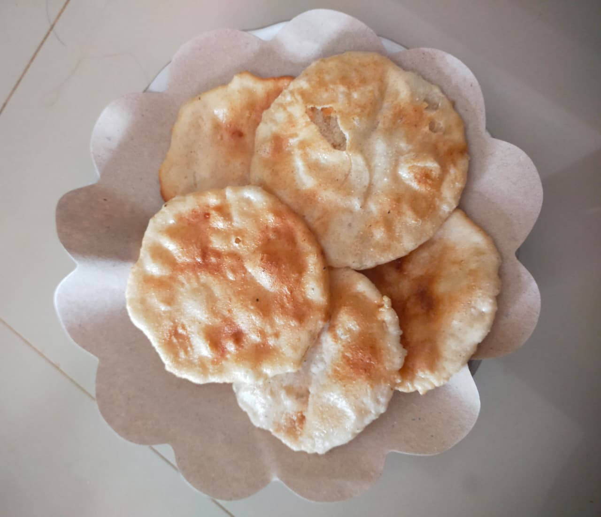

Daftar Produk Unggulan
Emping Melinjo
Emping renyah dari biji melinjo berkualitas tinggi, dibuat dengan proses tradisional oleh penduduk lokal.
Harga: Rp 15.000 / 200 gram
Harga: Rp 32.000 / 500 gram
Harga: Rp 60.000 / 1000 gram
Hubungi Penjual (Ibu Suranti)
Roti Bakar
Roti bakar segar dengan cita rasa lokal, dibuat setiap hari untuk kesegaran maksimal.
Harga: Rp 5.000 / pcs
Hubungi Penjual (Bapak endun)

Opak Singkong
Opak renyah dari singkong lokal, camilan tradisional yang lezat dan bergizi.
Harga: Rp 12.000 / 200 gram
Harga: Rp 22.000 / 500 gram
Harga: Rp 50.000 / 1000 gram
Hubungi Penjual (Ibu Iroh)